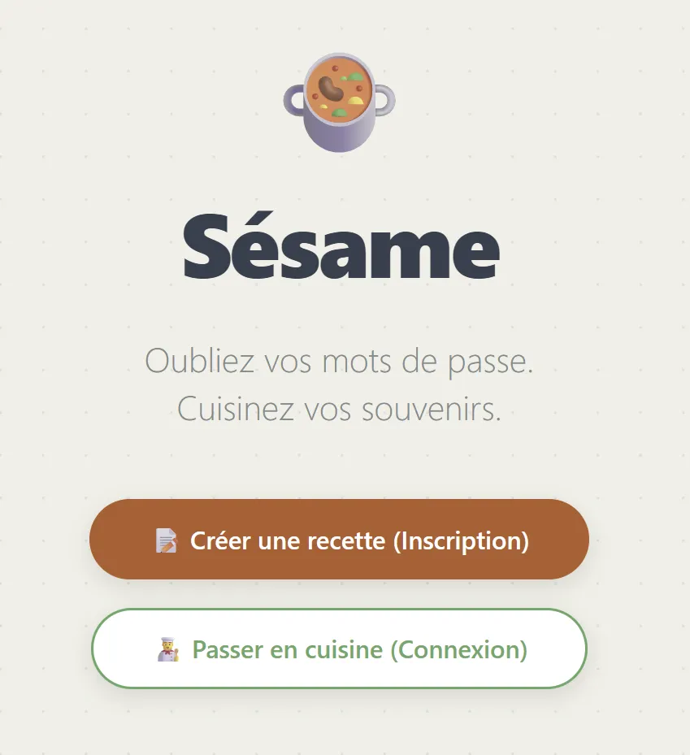
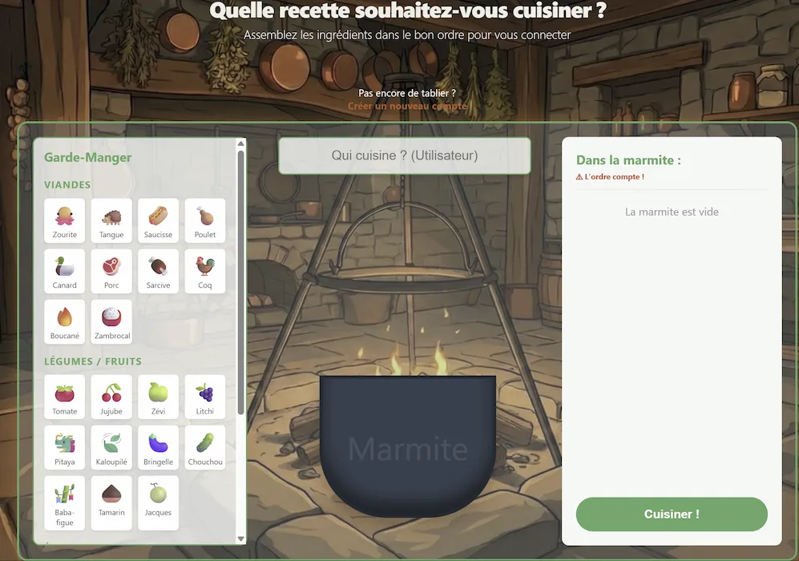
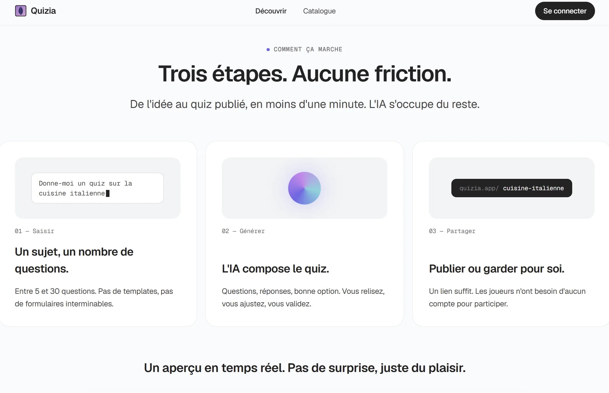

al3ph_zero
Hey! I'm an engineering student passionate about computer science. On this page, you'll find informations about my school projects, personal projects, as well as contact information.
Projects
-
uml2code
A multi-language code generator that turns PlantUML class diagrams into object-oriented source code in C++, Java and Python. It parses classes, interfaces, enumerations and the usual relationships (inheritance, implementation, composition, aggregation and association), and relies on the Abstract Factory pattern to keep diagram parsing fully decoupled from language-specific generation. An academic project carried out by a team of three.

-
Sésame
An alternative authentication system that replaces the usual alphanumeric password with a culinary one: instead of typing characters, you build a recipe by dragging and dropping ingredients, each one mapping to a character. The idea is to rely on procedural memory rather than rote recall. Built with a Laravel backend and vanilla JavaScript drag-and-drop during the Nuit de l'Info hackathon.


-
Quizia
An AI-powered quiz application: describe a topic and a number of questions, and the AI writes the whole quiz in seconds, ready to share or keep private. Quizzes can also be built by hand, and a public catalog offers search, filtering and gameplay tracking. Built with Next.js, React, TypeScript and Tailwind CSS on top of Supabase, with question generation powered by the Cerebras Cloud SDK.

Contact
Professional mail — al3ph_0@proton.me